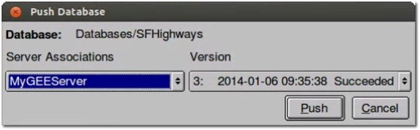
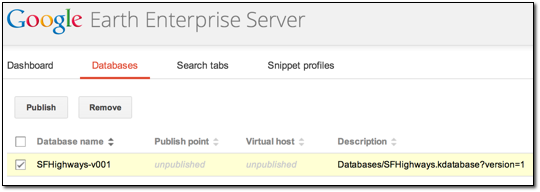
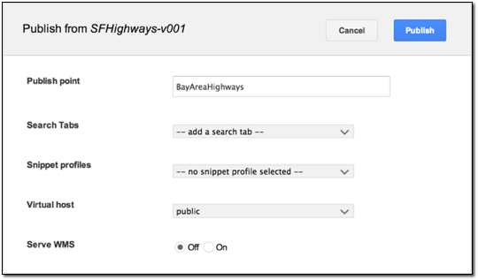
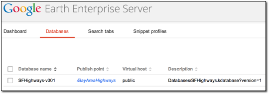
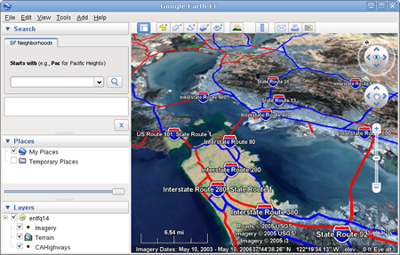

Google Earth Enterprise Documentation Home | Fusion tutorial
Pushing, Publishing, and Viewing a Database
Pushing a database is the process of making a Google Earth Enterprise Fusion database available on a Google Earth Enterprise Server so that it can then be published for viewing with Google Earth EC.
The push operation copies all the necessary files associated with a given 2D/3D Fusion database version to Google Earth Enterprise Server and registers the database. Pushing is performed from Fusion.
The publish operation makes a previously pushed database available for serving at a specified publish point. Publishing is performed on Google Earth Enterprise Server.
Note: This lesson assumes that Google Earth Enterprise Fusion, the Google Earth Enterprise Server, and Google Earth EC are all installed on your local workstation. If any of these applications are installed elsewhere on your network, adjust the instructions in this lesson accordingly.
Note: This lesson describes the steps for pushing a 3D Fusion database. The same workflow is used to push a 2D Mercator database, but note that snippet profiles don't apply and that the published map can be viewed in a web browser, not Google Earth EC. See Creating a Map Database for more information.
Push Your Database to Google Earth Enterprise Server
After you define and build your database, you “push” your database to Google Earth Enterprise Server. Pushed databases appear on the Databases page of the Google Earth Enterprise Server Admin console, from where you can then publish them.
To push a database:
- Select Asset Manager from the Tools menu. The Asset Manager appears.
- Navigate to the SFHighways database you built in Defining and Building Databases.
- Right-click the name of the database, and select Push from the context menu.
The Push Database dialog appears. The default server association is the only option on the Server Associations drop-down list. The most recent version of the selected database is the default selection on the Version drop-down list.

- Click Push. Google Earth Enterprise Fusion pushes the database to Google Earth Enterprise Server, and displays a success message when it is done.
Note: If you get an error message, contact your Google Earth Enterprise Server administrator for help, or check the documentation on Fusion Administration for more information.
Publish Your Database in Google Earth Enterprise Server
After you push your database to Google Earth Enterprise Server, you can publish it for viewing with Google Earth EC.
To publish a database:
- Access the Google Earth Enterprise Server Admin console in a browser window by going to myserver.mydomainname.com/admin, replacing myserver and mydomainname with your server and domain.
- Sign in with the default credentials or the username and password assigned to you:
- Default username: geapacheuser
- Default password:geeadmin
Note: If you do not know your username and password, contact your Google Earth Enterprise Server System Administrator.
- Click Databases to display the list of databases pushed to the Server.
SFHighways-v001 is listed. The Description, Type, Date, and Size of the database are also noted.

- Check the box next to SFHighways-v001. The Publish button on the Databases page appears.

- Click Publish. The Publish dialog appears.
- Change the default Publish point from SFHighways-v001 to BayAreaHighways.

Note: You can publish a database to multiple publish points, useful when you want to apply different search tabs, snippet profiles, and virtual host settings for different viewing needs.
Note: When publishing a database, the publish point you specify is case insensitive. Upper and lower case are not differentiated. Make sure each publish point path name you specify is unique.
To learn more about the options available in the Publish dialog, see Create Search Tabs, Snippet profiles, and WMS.
- Click Publish. The Databases page updates to indicate the published status of your database.

View Your Database
After you publish your database, you can view it in Google Earth EC. Google Earth EC can be downloaded from here.
To view your database:
- Launch Google Earth EC.
The Login dialog appears.
- Specify the Publish point by entering or selecting the URL or IP address of your server and database in the Server field. For this tutorial, the Publish point is myserver.mydomainname.com/BayAreaHighways, where myserver and mydomainname are specific to your server. An example URL would be http://myhostname/BayAreaHighways.
- Click Sign In.
- Double-click CAHighways to zoom in to your road data. 
Caution: If you have logged in to this server with Google Earth EC previously, log out, clear your cache, and log back in. See clearing your cache.
Google Earth EC displays your database. The Layers panel shows the terrain, imagery, and vector layers in the database you published in the previous exercise.
This concludes the basic lessons in this tutorial. If you want to continue with the advanced lessons, you can work through them in any order you want. Alternatively, you can start working with real data now and come back and work through the advanced lessons as you need them.